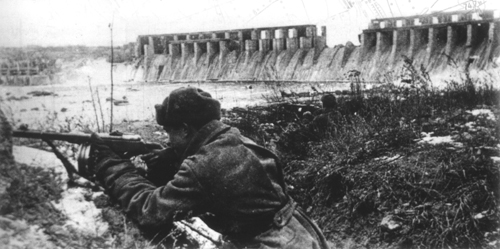

Names and etymology
The name Zaporizhzhia refers to the position of the city: "beyond the rapids"—downstream or south of the Dnieper Rapids. These were previously an impediment to navigation and the site of important portages. In 1932, the rapids were flooded to become part of the reservoir of the Dnieper Hydroelectric Station. Before 1921, the city was called Aleksandrovsk (or Oleksandrivsk), named after the original fortress that formed a part of the Dnieper Defence Line of the Russian Empire.
History
From the founding
Zaporizhzhia was founded in 1770, when the Aleksandrovskaya Fortress was built as a part of the Dnieper Defence Line, to protect the southern territories of the Russian Empire from Crimean Tatar invasions.Following the Treaty of Küçük Kaynarca in 1775, the southern lands of the Russian Plain and the Crimean peninsula were absorbed into the Russian Empire. The Aleksandrovskaya Fortress then lost its military significance, and became a small rural town, which from 1806 to around 1930 was called Alexandrovsk. The opening of the Kichkas Bridge at the start of the 20th century, the first rail crossing of the Dnieper, was followed by the industrial growth of Zaporizhzhia .In 1916, during World War I, the DEKA Stock Association transferred its aircraft engine manufacturing plant from Saint Petersburg to Zaporizhzhia. During the Russian Civil War (1918–1921), Zaporizhzhia was the scene of fierce fighting between the Red Army and the White armies of Denikin and Wrangel, Petliura's Ukrainian People's Army of the Ukrainian People's Republic, and German-Austrian troops. The opposing armies used the strategically important Kichkas Bridge to transfer troops, ammunition, and medical supplies. The Soviet government industrialized Zaporizhzhia still further during the 1920s and 1930s, when the Dnieper Hydroelectric Station, and the Zaporizhzhia Steel Plant, and the Dnieper Aluminium Plant were built.In the 1930s, the American United Engineering and Foundry Company built a strip mill similar to the Ford River Rouge steel mill to produce rolling steel strip. The annual capacity of the mill reached 540,000 tonnes (600,000 short tons) of 170 cm (66 inches) wide steel.
World War II
After the outbreak of the War between the USSR and Nazi Germany in June 1941, the Soviet government began evacuating Zaporizhzhia's industries to Siberia and the Soviet security forces began shooting political prisoners in the city. On 18 August 1941, elements of the German 1st Panzergruppe reached the outskirts of Zaporizhzhia on the right bank and seized the island of Khortytsia. The Red Army blew a 120 by 10 metres (394 ft × 33 ft) hole in the Dnieper hydroelectric dam on 18 August 1941, producing a flood wave that swept from Zaporizhzhia to Nikopol.The flood killed local residents as well as soldiers from both armies, with historians estimating the death toll to be between 20,000 and 100,000. Despite reinforcements, Zaporizhzhia was taken on 3 October 1941.The German occupation lasted two years; during which the Germans shot over 35,000 people and sent 58,000 people to Germany as forced labourers. The Germans reformed Army Group South in February 1943, and put its headquarters in Zaporizhzhia.Adolf Hitler visited the headquarters in February 1943, and again the following month, where he was briefed by Field Marshal Eric von Manstein and his air force counterpart Field Marshal Wolfram Freiherr von Richthofen, and in September 1943,the month the Army Group moved its headquarters to Kirovohrad. In August 1943, the Germans built the Panther-Wotan defence line along the Dnieper from Kyiv to Crimea. They retreated back to this line in September 1943, holding the city as a bridgehead over the Dnieper with elements of 40th Panzer and 17th Corps. The Soviet Southwestern Front, commanded by Army General Rodion Malinovsky, attacked Zaporizhzhia on 10 October 1943.The defenders repelled these attacks, but the Red Army launched a surprise night attack on 13 October, which succeeded in reclaiming most parts of the city.
1991–present
In 2004, to alleviate congestion around the Zaporizhzhia Arch Bridge area, construction began on the New Zaporizhzhia Dniper Bridge, although construction was halted soon after it began, due to a lack of funding. During the 2014 Euromaidan regional state administration occupations, during protests against President Viktor Yanukovych, Zaporizhzhia's regional state administration building was occupied by 4,500 protesters, and there were clashes between Ukrainian and pro-Russian activists in April 2014. On 19 May 2016, the Verkhovna Rada approved the "Decommunisation Law". Since the introduction of the law, the city council renamed over 50 streets and administrative areas of the city, monuments of the Soviet Union leaders Lenin and Felix Dzerzhinsky have been destroyed, and names honouring Soviet leaders in the titles of industrial plants, factories, culture centres, and the DniproHES have been removed.
Russian invasion
Russian forces have been engaged in ongoing attacks on Zaporizhzhia since the beginning of the 2022 Russian invasion of Ukraine. On 27 February, fighting was reported in the southern outskirts, and Russian forces began shelling the city later that evening. On 3 March, Russian forces approached the Zaporizhzhia Nuclear Power Plant, raising concerns about a potential nuclear meltdown. Russian military forces fired missiles on Zaporizhzhia on the evening of 12/13 May. On 30 September, hours before Russia formally annexed Southern and Eastern Ukraine, the Russian Armed Forces launched S-300 missiles at a civilian convoy in Zaporizhzhia, killing at least 30 people.On 9 October, Russian forces launched rockets at residential buildings, killing at least 17 people.
Geography
Zaporizhzhia is located in south-eastern Ukraine. The Dnieper splits the city in two; between them is Khortytsia Island. The city covers 334 km2 (129 sq mi) at an elevation of 50 m (160 ft) above sea level.The New and Old Dnieper flow past around Khortytsia: The New Dnieper [uk] is about 800 m (2,600 feet) wide while the Old Dnieper [uk] is about 200 m (660 feet) wide. The island size is 12 km × 2 km (7.5 mi × 1.2 mi). Smaller rivers in the city also enter the Dnieper: Sukha [uk] and Mokra Moskovka [uk], Kushuhum [uk], and Verkhnia Khortytsia [uk]. The flora of Khortytsia is unique and diverse, due to the dry steppe air and a large freshwater basin, which cleans the air polluted by industry. The island is a national park. The ground surface is cut by large ravines ("balka"), hiking routes and historical monuments. The island, which is a popular recreational area, has sanatoriums, resorts, health centres, and sandy beaches.
Economy
Industry
Zaporizhzhia is an important industrial centre of Ukraine, the country's main car manufacturing company, the Motor-Sich aircraft engine manufacturer. Well supplied with electricity, Zaporizhzhia forms, together with the adjoining Donets Basin (Donbas) and the Nikopol manganese and Kryvyi Rih iron mines, one of Ukraine's leading industrial complexes.The city is a home of Ukraine's main automobile production centre, which is based at the Zaporizhzhia Automobile Factory (ZAZ), producing Ukrainian car brands such as Zaporozhets and Tavria. After the end of the Russian Revolution, the city became an important industrial centre. The presence of cheap labor and the proximity of deposits of coal, iron ore, and manganese created favorable conditions for large-scale enterprises of the iron and mechanical engineering industries. Today Zaporizhzhia is an important industrial centre of the region with heavy industry (particularly metallurgy), aluminium, and chemical industry. Cars, avia motors and radioelectronics are manufactured in the city. The port of Zaporizhzhia is important for transshipment for goods from the Donbas. Zaporizhstal, Ukraine's fourth largest steel maker, and ranking 54th in the world, is based in the city.
Electricity generation
Zaporizhzhia is a large electricity generating hub. There are hydroelectric power plant known as "DniproHES" Dnieper Hydroelectric Station and the largest nuclear power plant in Europe. Prior to the 2022 invasion, the plants generated about 25% of the Ukrainian electricity supply. Located near Enerhodar and about 60 km (37 miles) from Zaporizhzhia is the Zaporizhzhia Thermal Power Station and the Zaporizhzhia Nuclear Power Plant, the largest nuclear power plant in Europe.
Main sights

The historical and cultural museum "Zaporizka Sich" is placed on the northern rocky part of Khotritsa Island.The museum is a reconstruction of the stronghold of the Zaporizhzhian Cossacks, and contains features of the military camp life and their lifestyle. Each of the smaller islands between the dam and the island Khortytsia has its own legend. On one of them, Durnya Scala ("Rock of the Fool"), Tzar Peter the Great flogged the Cossacks for their betrayal of the Russians during the Great Northern War between Russia and Sweden. Another small island, Stolb ("Pillar"), has a geological feature, which looks like a large bowl in granite slabs, the Cossack's Bowl. It is said that in summer days, water can be boiled in this "bowl", and the Cossacks used it for cooking galushki (boiled dough in a spicy broth).